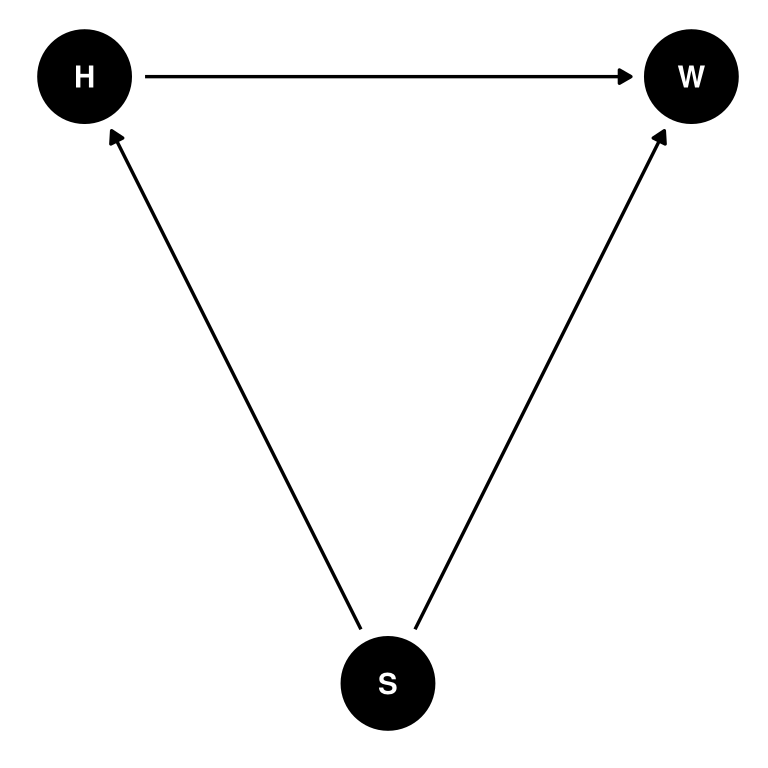
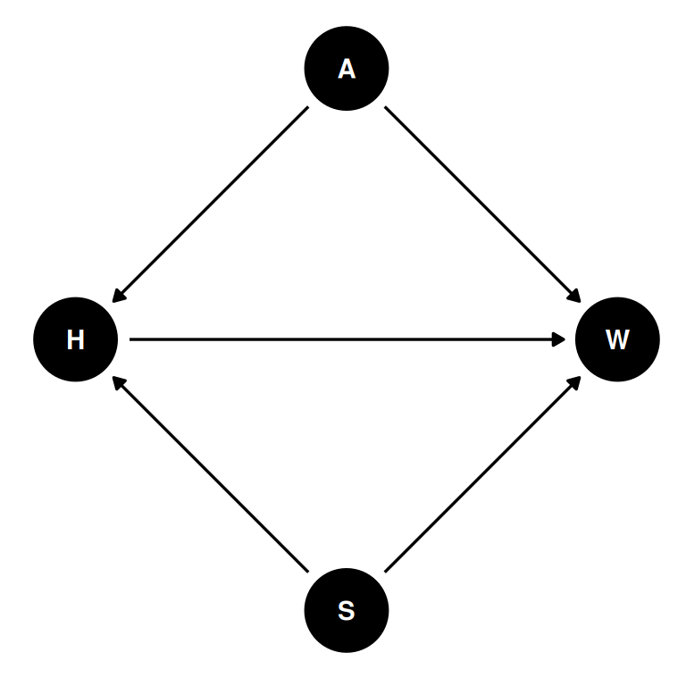
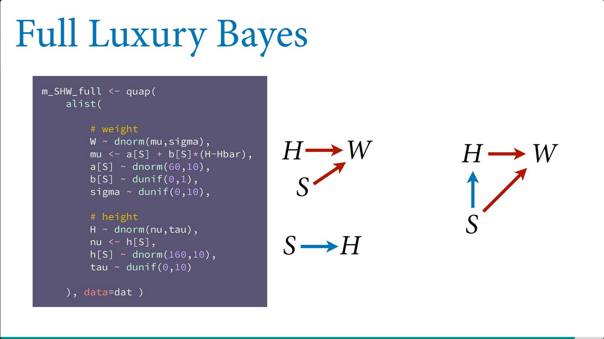
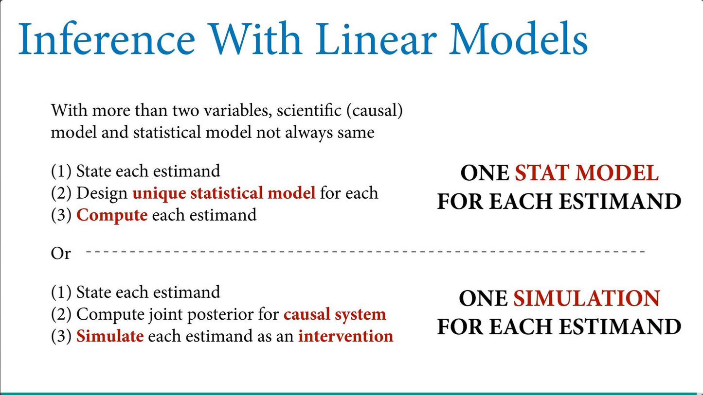

coords <- data.frame(
name = c('H', 'W', 'S', 'A'),
x = c(1, 3, 2, 2),
y = c(0, 0, -1, 1)
)Lecture 04 Notes
Categories
Problem: discrete unordered types
Solution: stratify by category and fit a separate line for each
Two options for coding categorical variables:
- indicator variables (0/1)
- index variables (1, 2, 3, 4, …)
Index variables offer an advantage of allowing you to flexibly add or remove indexes without having to rewrite the model. Indicator variables are limited to 2 groups.
Then the variable, eg. an \(\alpha\) intercept, becomes a vector of intercepts for each index.
\(W_{i} \sim Normal(\mu_{i}, \sigma)\)
\(\mu_{i} = \alpha_{S[i]}\)
\(\alpha \sim Normal(60, 10)\)
\(\sigma \sim Uniform(0, 10)\)
Example: weights in Howell data
1. Estimand
- Causal effect of height on weight?
- Causal effect of sex on weight?
- Direct causal effect of sex on weight?
2. Generative model
Stratify by sex
dagify(
W ~ H + S,
H ~ S,
coords = coords
) |> ggdag(seed = 2, layout = 'auto') + theme_dag()
Most interventions on height will influence weight but the reverse is not necessarily true. Sex is a mediator which indirectly influences weight through height and directly influences weight.
\(H = f_{H} (S)\)
\(W = f_{W}(H, S)\)
Note that unobserved confounds can be ignored unless they are shared by multiple variables.
3. Statistical model
Causal effect of S on W
\(W_{i} \sim Normal(\mu_{i}, \sigma)\)
\(\mu_{i} = \alpha_{S[i]}\)
\(\alpha \sim Normal(60, 10)\)
\(\sigma \sim Uniform(0, 10)\)
Direct causal effect of S on W
\(W_{i} \sim Normal(\mu_{i}, \sigma)\)
\(\mu_{i} = \alpha_{i} + \beta(H_{i} - \bar{H})\)
Centering H by subtracting the mean from each value means that alpha represents the average weight of a person with average height. This makes it easy to define justifiable priors for alpha
\(\alpha \sim Normal(60, 10)\)
\(\beta \sim Normal(0, 1)\)
\(\sigma \sim Uniform(0, 10)\)
4. Validate
Test with simulated individuals
5. Analyze the data
Analyze the real data with the statistical model defined in 3 (and validated in 4).
Extract samples from the posterior and compute a contrast. Note, it is insufficient to compare the posterior mean parameter estimates or to plot the densities of parameter estimates. Take the entire sample of the posterior distribution and compute the contrast distribution. No comparing confidence intervals or p-values.
Always summarize last. We want the mean different and not mean of differences.
Curves
H -> W obviously not linear
We can use linear models to curves, but note, like all linear models, this is not mechanistic.
Solution: splines and generalized additive models
We avoid polynomial linear models because there is forced symmetry and explosive uncertainty at the edges. There is no local smoothing, only global.
Splines
Splines offer a locally inferred function, where many locally trained functions that are combined and smoothed into a continuous function. They are powerful geocentric devices.
Basis splines are linear models with synthetic variables.
\(\mu_{i} = \alpha + w_{1} B_{i, 1} + w_{2} B_{i, 2} + w_{3} B_{i, 3} + ...\)
Weights w are like slopes and basis functions B are synthetic variables. Spline is the sum of the weights at any point on the x-axis (eg. age).
Example: heights as a function of age
Height as a function of age
dagify(
W ~ H + S + A,
H ~ S + A,
coords = coords
) |> ggdag(seed = 2, layout = 'auto') + theme_dag()
Strange to consider age as a cause because what is a definable intervention? Does age simply represent accumulated growth? In this case, those are not measured so we will consider it as a proxy for those variables.
Full Luxury Bayes
In the heights in Howell data example above, we used two models for two estimands: the total causal effect and the direct causal effect of sex on weight.
An alternative and equivalent approach is to use one model of the entire causal system, then use the join posterior to compute each estimand. Multiple models approach requires more models, full luxury bayes approach requires more simulation.

